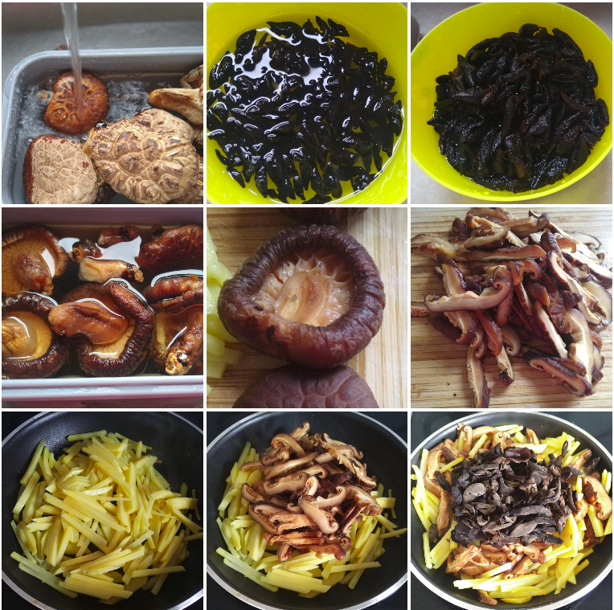
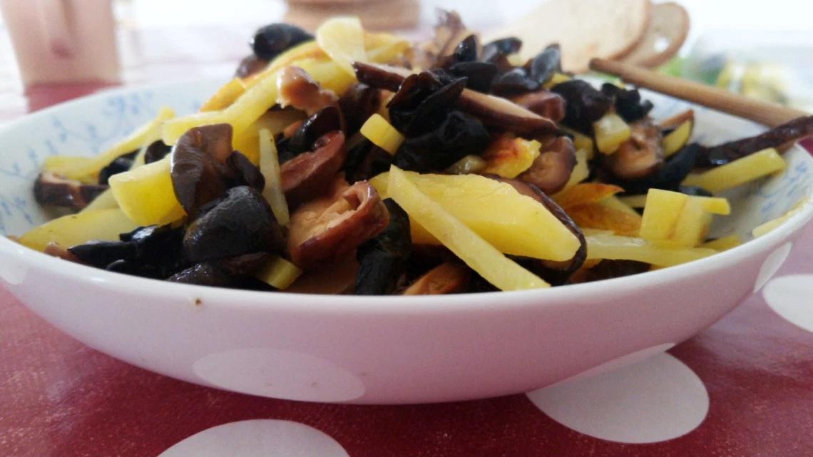
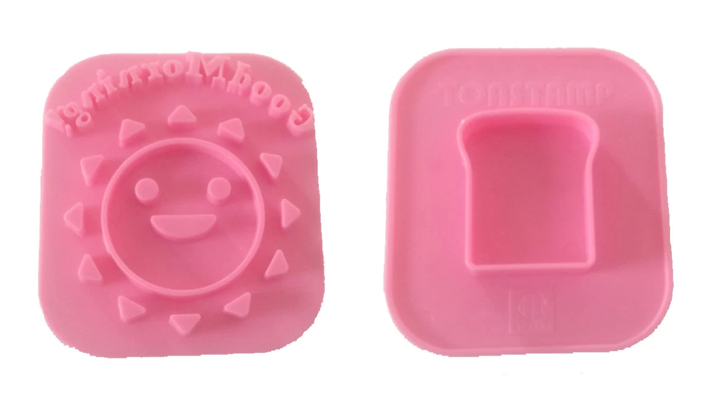
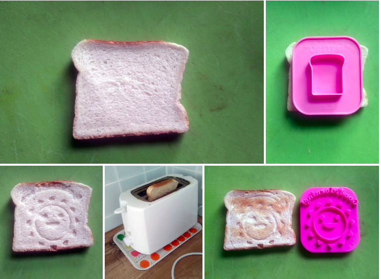
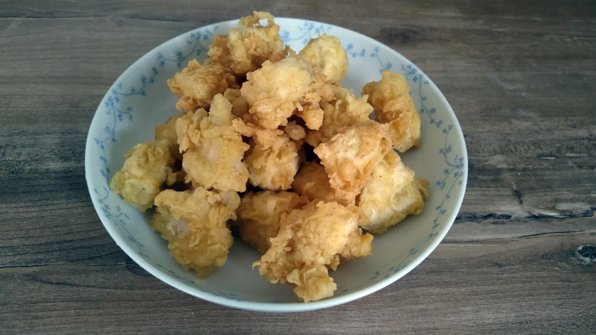
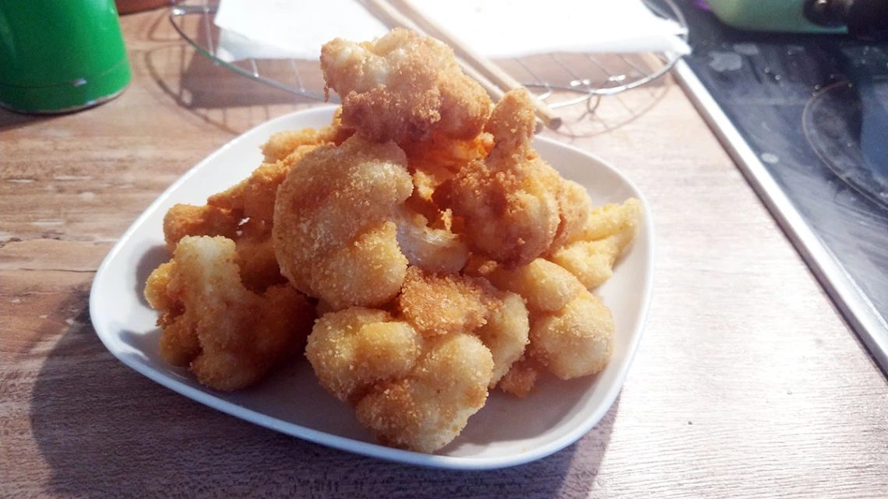
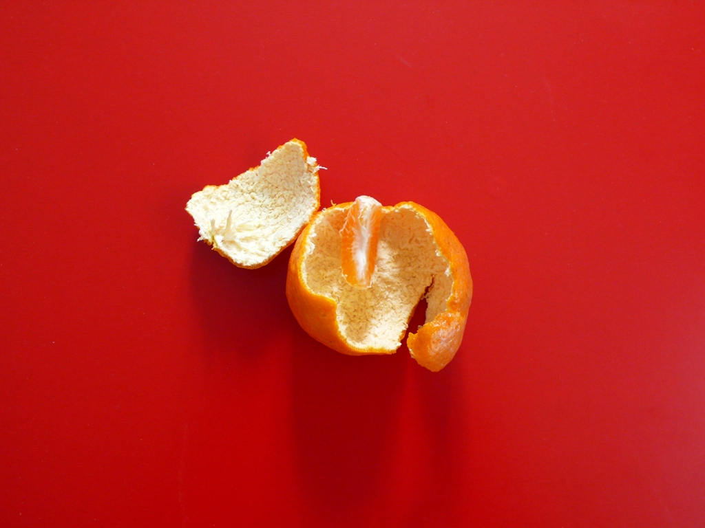

Blog:
Stir Fried Three Vegetables
October 7, 2020

My mom gave me this tradition Japanese snack. The Japanese snack is quite funny for me. They are not specially tasty but you will keep non-stop eating it. So, I tried to introduce these 10 kinds of snack.
Messy Start
First, soak the dried mushroom and cheery fungus into the water until it is soft. Peel the potatoes and cut into strips. Squeeze out the water from soften mushroom and then remove the stem and cut into strips. 
My kids grows up in Europe. She has problem to try Asian foods. She only judged by the outlook and decided to eat or not. And this time, I she tried all these snacks but no one she like… I still encouraged her because at least she tried.
Stir Fried Three Vegetables
October 7, 2020
Every year, my parents come to Germany and visit their grandchild (yes, not me). Every time, my mom bought a log of herbs, Asian ingredients, snacks, etc., to us (actually, just me to tough it. My kid and husband don’t like these kinds of Asian foods.) So, I have a lot of mushrooms, a lot of herbal tea, a lot of a lot of a lot of something I never ever can finish it alone. Last weekend, I tried to clean up the storage room. I found some dried mushroom and million thousand of cherry fungus. I made a promise to myself that I have to finish all these cherry fungus. So, this [Stir Fried Three Vegetables] is born.Ingredients
Ingredient
- dried mushroom
- cherry fungus
- potatoes
- oil
- salt
Messy Start
First, soak the dried mushroom and cheery fungus into the water until it is soft. Peel the potatoes and cut into strips. Squeeze out the water from soften mushroom and then remove the stem and cut into strips.
I tired to cook as much as I can and I tried to eat as much as I can but… still have a lot of cherry fungus…. I hope that I can finish it in this year…
Sunshine Toast
October 15, 2020
To make the food more fun for my kid, I bought this mold from 10 dollar shop in Hong Kong (10 dollar means 10 Hong Kong dollar. Less than 1 Euro).
Ingredient
- toast
Messy Start
It is simple to use. Put the mold on the toast and press it and then put it into the toaster. 
You can see, I tired but only the sun is there. “Good Morning” is messy…. still it is fun for the kid.
Korean Fried Chicken
Septemer 26, 2020
I like to watch Korean variety shows such as [Boss in the Mirror], [Star’s Top Recipe at Fun-Staurant] and some youtube channel such as [Wassup Man], [YangBoss MakTube], etc. They show this Korean fried chicken from time to time. Living in Germany is not easy to find Korean food. I decided to make my own one.
Ingredient
- Coating: Mix all these – Flour (405), garlicpowder, paprika powder, curry powder, salt, baking powder and onion powder as I couldn’t find it in the local supermarket.
- Batter: Take half coating and add #water one#egg #chickenbreast: my family doesn’t like bone but chicken with bone tastes much better
- vegetable oil: for deep fry
Messy Start
I have some leftover during the lunch time. So, I only used half cauliflower.First of all, I boiled the cauliflower in the salty water until it is soft. There are some inside leaves from cauliflower. It also tastes good by boiling it or stir frying it. The outside one is the harder one. I keep them for guinea pigs. After boiling the cauliflower, let it cool down and then you can start to make the coating. Dip the cauliflower into flour, then egg wash and then breadcrumb. After it, put it into the hot oil and deep fry until crispy. Nothing fancy but tasty.
Except fried cauliflower, there were some leftover such as pan fried potatoes and chicken breast burger from the lunch. I gave two pieces fried cauliflowes to my kid. She said it is chicken (FYI: she loves chicken)… but after two pieces, she only ate potatoes… So, I tried but it is difficult to make kid like vegetables….
Fried Cauliflower
Septemer 28, 2020
Ok, I am not Slovak but my husband is. Living in Germany may not find Slovak food easily. Then, my husband taught (a.k.a forced) me to learn. Fried Cauliflower (Slovak name: Vyprážaný Karfiol) is one of popular dish in Slovakia if you eat outside. Below is my version.
Ingredient
- cauliflower
- salt
- egg wash
- oil
- flour 405
- breadcrumbs
Messy Start
I have some leftover during the lunch time. So, I only used half cauliflower.First of all, I boiled the cauliflower in the salty water until it is soft. There are some inside leaves from cauliflower. It also tastes good by boiling it or stir frying it. The outside one is the harder one. I keep them for guinea pigs. After boiling the cauliflower, let it cool down and then you can start to make the coating. Dip the cauliflower into flour, then egg wash and then breadcrumb. After it, put it into the hot oil and deep fry until crispy. Nothing fancy but tasty.
Except fried cauliflower, there were some leftover such as pan fried potatoes and chicken breast burger from the lunch. I gave two pieces fried cauliflowes to my kid. She said it is chicken (FYI: she loves chicken)… but after two pieces, she only ate potatoes… So, I tried but it is difficult to make kid like vegetables….
Chenpi
October 1, 2020
Chenpi is a sun-dried tangerine peel. In Hong Kong, it uses on different dishes such as red bean soup, congee, steam fish, fish ball or just put into a hot water like tea. Surely you can find it in the Asian store. But you have no idea what chemical stuff it added on the peel… and the good quality and few-year-sun-tried chenpi is very expensive. So I decided to prepare my own chenpi.
Ingredient
- tangerines
Messy Start
Actually it is not so messy. Just peel off the skin of tangerine and remove stem and the white “meat” (albedo) as much as possible by a knife. Then dry under the sun for 3 days. After it, you can store it into tight seal glass and keep it in cool area. Every year, you just need to put under the sun for a while and then you can keep very long time…
According to some websites, if the sun-dried tangerine peel is called chenpi, it needs to dry minimum 3 years. If not, it only can be called sun-dried peel… so, I tried but it still has 154 weeks to go….